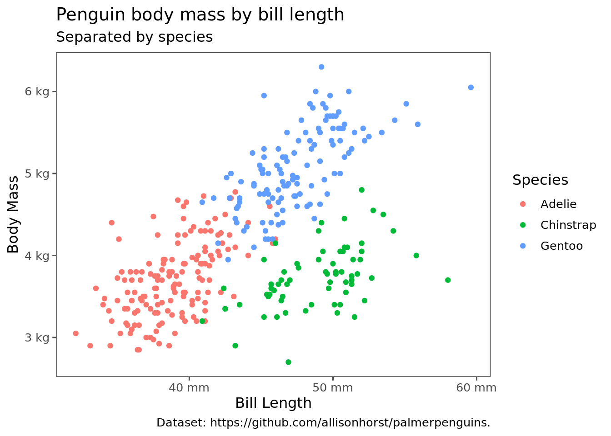
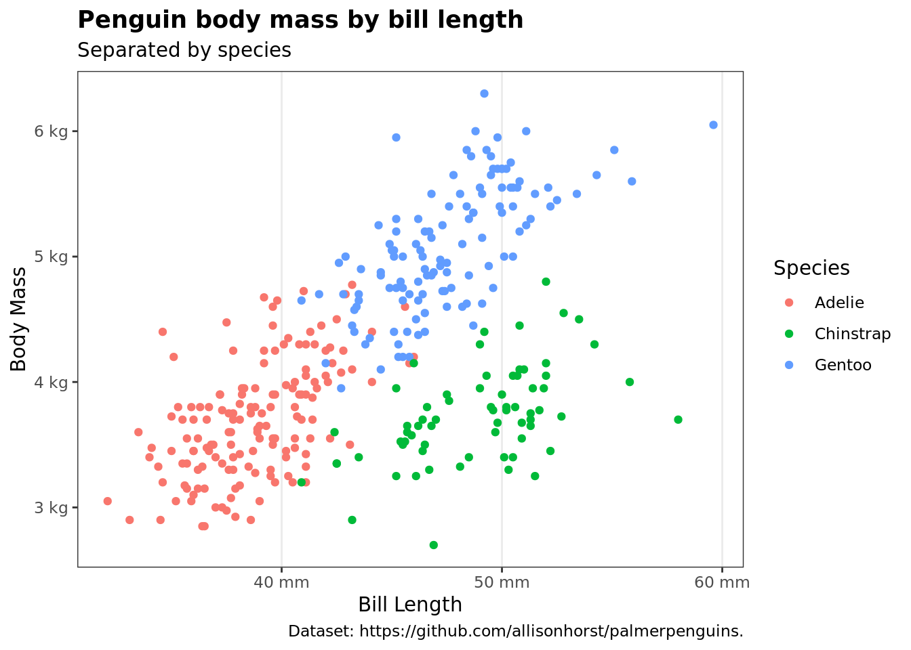
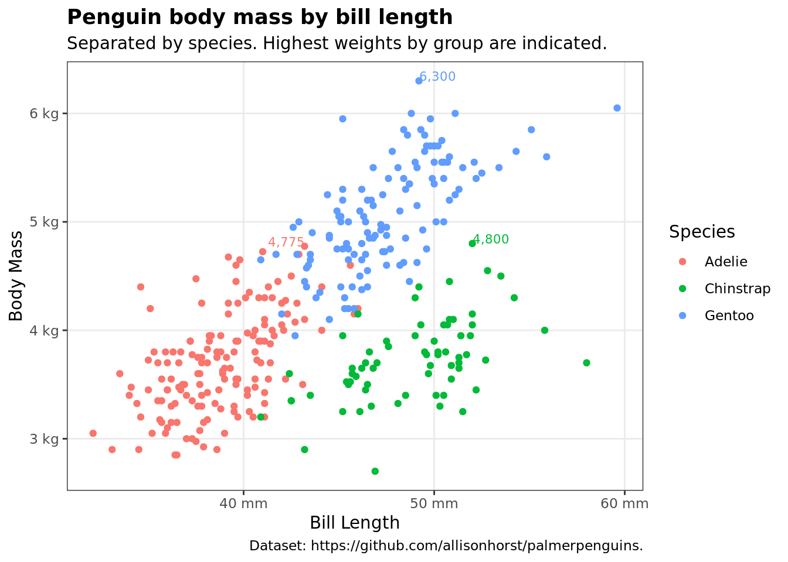

I have a lot of R functions that I use which don’t necessarily each warrant creating their own package. I’m also not confident that I’m implementing these in the best possible way, or in a way that hasn’t already been implemented in some package that I just don’t know about.
But since I don’t package them, I end up just forgetting about them until the next time I need them, at which point I rewrite them but with subtle variations. This is confusing and bad, so I’m now putting them together into a package.
I can’t recommend doing this highly enough. Having a set of tools that implements recurring operations has really sped up my ability to do quick data analysis. Different people working in different environments will have different recurring problems, and so the most popular packages probably won’t have stuff that’s perfectly tailored for your workflow. It’s also just fun, if you like to program.
Here are the few things I’ve contributed to this package thus far.
Plotting
Theming
Over the years I’ve decided that there is in fact a best ggplot2 theme, and that is theme_few from ggthemes.
penguins <- palmerpenguins::penguinsp <- penguins %>%ggplot(aes(x = bill_length_mm, y = body_mass_g, color = species)) +geom_point() +labs(title ='Penguin body mass by bill length', subtitle ='Separated by species',caption ="Dataset: https://github.com/allisonhorst/palmerpenguins.",x ='Bill Length', y ='Body Mass', color ='Species') +scale_x_continuous(labels =label_number(scale_cut =cut_si('mm'))) +scale_y_continuous(labels =label_number(scale_cut =cut_si('g')))p + ggthemes::theme_few()

However, there are a few recurring changes that I tend to make to this. First, I like a bold title. Second though, although I like the appearance of no grid lines, sometimes it’s not appropriate. Depending on the visualization, you might want a grid—or you might want only horizontal or vertical grid lines. So I have a theme theme1 which implements this, with the first argument specifying which grid direction to apply.
p +theme1() # default, prints the whole grid
p +theme1(grid_type ='horizontal') # I find this mainly useful for time series
p +theme1(grid_type ='vertical') # I don't really ever use this, but included for completeness

p +theme1(grid_type ='none')
Annotations
Annotating key points directly on a plot is underrated. I’ve often found that labeling an important point on a plot is so much more effective than trying to explain to people what they’re supposed to be looking for. For that reason, I started developing some functions to make these annotations quickly.
These are in a set of functions called stat_annotate_*. They’re very straightforward to use, and I’ve already gotten a lot of mileage out of them in the short time since I actually sat down and coded them.
p +theme1() +stat_annotate_max() +labs(subtitle ='Separated by species. Highest weights by group are indicated.')

All of the usual text attributes can be passed to these functions, and an argument called labeler provides a labeling function to the annotation.
p +theme1() +stat_annotate_max(vjust = .5, size =5, nudge_x =1, family ='serif', fontface ='bold.italic',labeler =label_number(scale_cut =cut_si("g"), accuracy = .01),geom ='label') +labs(subtitle ='Separated by species. Highest weights by group are indicated.')
Since it’s implemented as a stat_ function, you can also use any other geom—including ones which aren’t text based, which is sometimes useful as well.
p +theme1() +stat_annotate_max(geom ="point", size =4) +labs(subtitle ='Separated by species. Highest weight by species is marked by a larger point.')
Right now there are 4 stat_annotate_ functions implemented.
Eventually I want to build in some smarter logic for placing the labels so that they don’t overlap with the chart too much, but for now it’s not too hard to just mess with the vjust and hjust or nudge_x and nudge_y parameters to place them where you want.
Slicing and Dicing
Something I find myself frequently needing to do is to take a dataset with categorical variables and filter it to include only the categories that occur the most frequently. For example, maybe I want to look at only the island with the most observations from the penguins dataset. Enter slice_top_categories.
I can use this for arbitrarily many columns as well, so if I wanted the 2 most frequently occurring (species, sex) pair weighted by body mass, I could go like this.